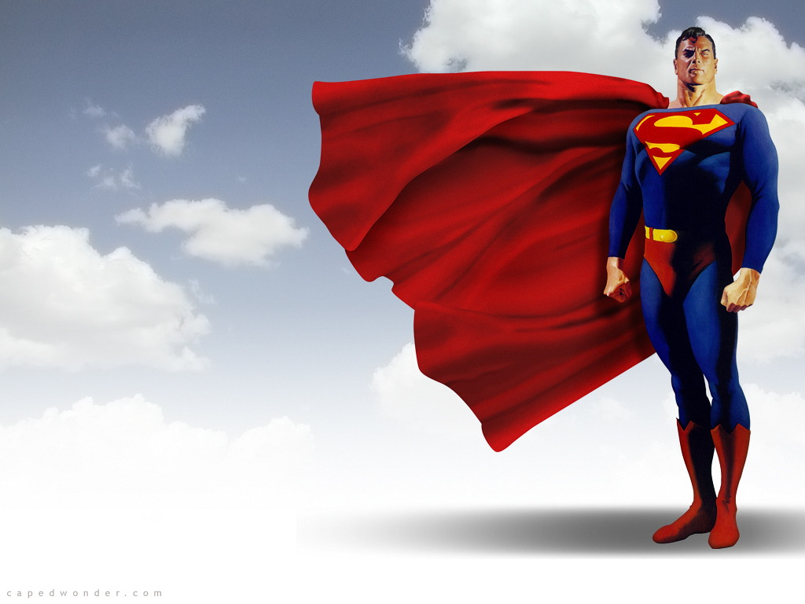
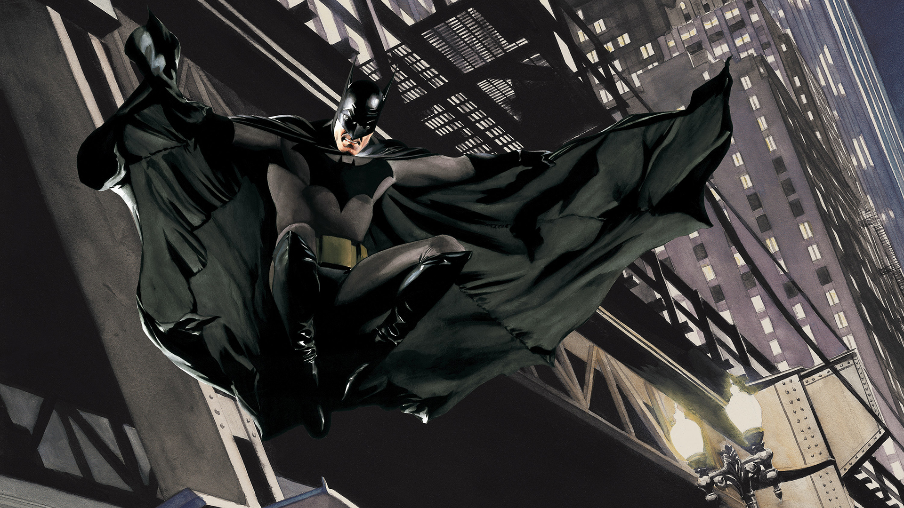

Blog DC
Tu blog de DC
Blog DC
Tu blog de DC
Blog DC
Tu blog de DC
Blog DC
Tu blog de DC
Esta pagina esta dedicada a los superheroes de DC

Nació en el planeta Krypton y recibió el nombre de Kal-El al nacer. Cuando era bebé, sus padres, el científico Jor-El, y su esposa Lara Lor-Van, lo enviaron a la Tierra en una pequeña nave espacial momentos antes de que Krypton fuera destruido en un cataclismo natural. Su nave aterrizó en el campo estadounidense, cerca de la ciudad ficticia de Smallville. Fue encontrado y adoptado por los agricultores Jonathan y Martha Kent, quienes lo llamaron Clark Kent.
Clark desarrolló varias habilidades sobrehumanas, como una fuerza increíble y una piel impermeable. Sus padres adoptivos le aconsejaron que usara sus habilidades en beneficio de la humanidad y decidió luchar contra el crimen como un justiciero. Para proteger su privacidad, se pone un traje colorido y usa el alias "Superman" cuando lucha contra el crimen.
Aunque denominado, algunas veces, de manera poco halagadora, como «el gran Boy Scout azul» por otros superhéroes, Superman también es conocido como «El Hombre de Acero», «El Hombre del Mañana» y «El Último Hijo de Krypton» por el público general de los cómics. Bajo la identidad de Clark Kent, Superman vive en medio de los humanos como un «tímido reportero» del diario Daily Planet de Metrópolis. Ahí trabaja junto a la reportera Lois Lane, con la cual ha sido vinculado románticamente. Junto con el fotógrafo Jimmy Olsen y el editor en jefe Perry White. Superman tiene una extensa galería de villanos con su archienemigo el supervillano Lex Luthor.

Batman (conocido inicialmente como Bat-Man y en español como el Hombre Murciélago) es un personaje creado por los estadounidenses Bob Kane y Bill Finger,13 y propiedad de DC Comics. Apareció por primera vez en la historia titulada «El caso del sindicato químico» de la revista Detective Comics N.º 27, lanzada por la editorial National Publications el 30 de marzo de 1939.
La identidad secreta de Batman es Bruce Wayne (Bruno Díaz en algunos países de habla hispana),141516 un multimillonario magnate empresarial y filántropo dueño de Empresas Wayne en Gotham City. Después de presenciar el asesinato de sus padres, el Dr. Thomas Wayne y Martha Wayne en un violento y fallido asalto cuando era niño, juró venganza contra los criminales, un juramento moderado por el sentido de la justicia. Bruce Wayne se entrena física e intelectualmente y crea un traje inspirado en los murciélagos para combatir el crimen, con sus gadgets de combate del batcinturón y sus vehículos.17
A diferencia de los superhéroes, no tiene superpoderes: recurre a su intelecto, así como a aplicaciones científicas y tecnológicas para crear armas y herramientas con las cuales lleva a cabo sus actividades. Vive en la mansión Wayne, en cuyos subterráneos se encuentra la Batcueva, el centro de operaciones de Batman. Recibe la ayuda constante de otros aliados, entre los cuales pueden mencionarse Robin, Batgirl (posteriormente Oráculo), Nightwing, el comisionado de la policía local, James Gordon, y su mayordomo Alfred Pennyworth. Una gran variedad de villanos conforman la galería de Batman, incluido su archienemigo, el Joker.

La Mujer Maravilla (en inglés: Wonder Woman) es una superheroína ficticia creada por William Moulton Marston para la editorial DC Comics. Es una princesa guerrera de las Amazonas, pueblo ficticio basado en el de las amazonas de la mitología griega. En su tierra natal es conocida como la princesa Diana de Temiscira pero fuera de esta utiliza la identidad secreta de Diana Prince.
Está dotada de una amplia gama de poderes superhumanos y habilidades de combate de batalla superiores, gracias a sus dones obtenidos de los dioses y su amplio entrenamiento. Ella posee un gran arsenal de armas, incluyendo entre las principales el Lazo de la Verdad, un par de brazaletes mágicos indestructibles, su tiara, que sirve como arma, y en algunos relatos, en la edad de oro, tuvo un avión invisible. Pero más adelante, se le fue mostrando con la capacidad de volar cada vez con mayor frecuencia por lo que el avión invisible fue dejando de utilizarse.
El personaje apareció como tal publicado por primera vez en la revista de historietas All Star Comics #8 (de diciembre de 1941)1 y con su alter-ego en el Sensation Comics #1 (de enero de 1942).2 El título de historietas de la Mujer Maravilla ha sido publicado por DC Comics casi continuamente a excepción de un breve período donde no tuvo serie en 1986.3 Su representación como una heroína que lucha por la justicia, el amor, la paz y la igualdad sexual ha llevado a la Mujer Maravilla a convertirse en un icono feminista.456 Creada durante la Segunda Guerra Mundial, el personaje fue representado inicialmente en su lucha contra las fuerzas militares de ocupación del Eje, así como una gran selección de supervillanos.
La Mujer Maravilla ha ganado un gran elenco formidable de enemigos empeñados en la eliminación de la amazona, incluyendo villanos clásicos como Baronesa Paula Von Gunther, Cheetah, Ares, Doctor Poison, y la bruja Circe, y entre los más nuevos como Maxwell Lord, así como también la enemistad y/o rivalidad de muchos dioses y monstruos de la mitología griega. Mujer Maravilla también ha aparecido regularmente en las historietas en los grupos de superhéroes como en la Sociedad de la Justicia de América (desde 1941) y la Liga de la Justicia (desde 1960).